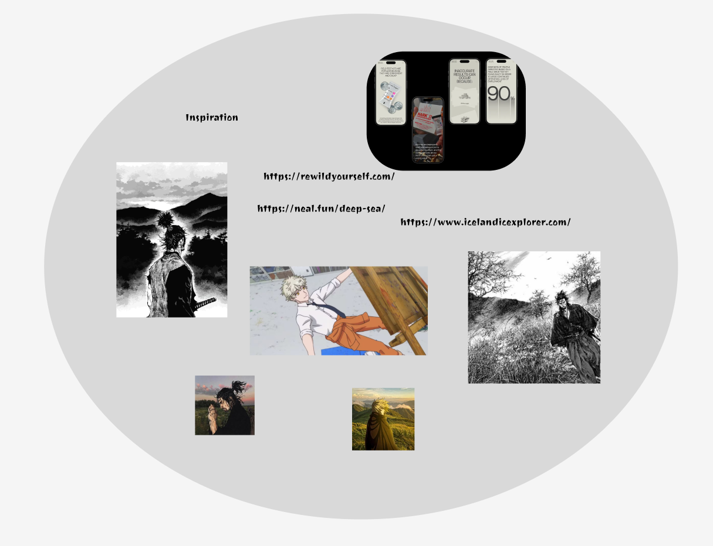

This is a website for my project at Vainer college. The goal for this website was to be able to demonstrate my capabilities and understanding with html, css, javascript and general conceptual design. I went about this by utilizing animations shown to me in class along side javascript. The content that I chose to fill the website was a walkthrough on how to draw.
3 websites
As a way of gathering my thoughts on what I was looking for in design for the website I found these 3 websites: icelandicexplorer neal deepsea rewildyourself. It may not be exact, but I fell in love with the infinite scrolling, and a lot of the fading in animations.
Inspiration and mood board
As for most of my Inspiration, I believe when we have a lot of freedom like in this project our hobbies tend to come out and show themselves. in this case i'm aware of how much of a super-fan I am of anime and art so i drew Inspiration from a manga i have read named vagabond and a trend online called hopecore. as a way of hopefully encouraging younger artists to continue on their path. 